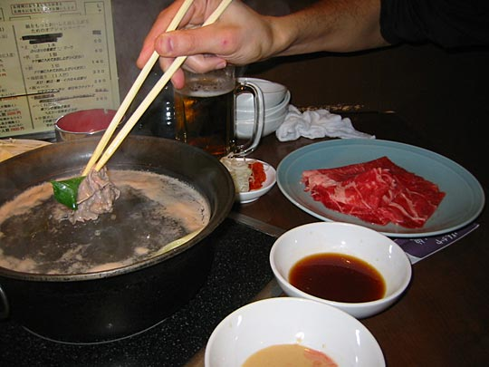
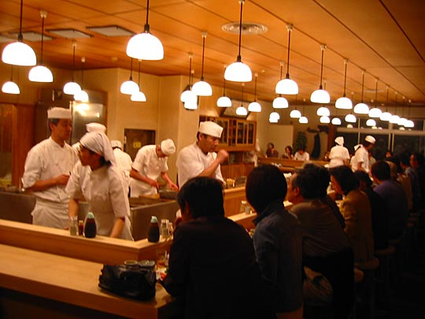

Photos from our second trip to Japan, 18 March–2 April 2005 are on Flickr
Japan, 18-28 April 2003
- Index and travelogue
- Imagery: Japanese posters, images, TV, and other designs [2.4Mb]
- Design that's different or clever [0.8Mb]
- Food [2.36Mb]
- Loot [2.45Mb]
Images of food
Many of these photos are also on the other pages. I just summarised interesting food-related things here for people who don't want to bother the other pages but are interested in food. The depato section below is entirely exclusive to this page, though.
Food in restaurants (meals during the week)
Fast-food Japanese breakfast, Sunday. The plastic food display outside. We had the 420 Yen meal.

Tonkatsu at Suzuya, Monday. The plastic food display outside
Our kaiseki meal at Taisekan ryokan, Tuesday

Little flames burning underneath the Japanese chowder

Clockwise from top left: Kuchigawari (Palate-refreshing foods); Yakimono (grilled food) — note the long ginger shoot; Sashimi; Sakizuke (Appetizer), also rice and tea
Clockwise from top left: Sunomono (Vinegared dish) — note the firefly squid; Kounomono (Pickles); Owan (Clear broth) — with a cherry blossom floating in it; Yose-nabe (Japanese chowder)

Clockwise from top left: clear soup with little mushrooms with a tang of pine needles (this one's from next morning's breakfast actually); Grilled eel; Dessert; Nimono (Boiled dish)
Kaiseki style breakfast at Taisekan, Wednesday. The centrepiece is beautiful little grilled fresh-water fish. The dried seaweed comes in a little laquerware box that looks more like it was made for an expensive fountain-pen or something.
Lucky eggs boiled in the sulphur pits at Owakudani (Hell's Valley), reputed to add a year to your life for every one eaten. Wednesday.
Shabu shabu

Thursday. You get as much thinly-sliced raw beef and vegetables as you can eat in 1½ hours (when anything runs out, you press a buzzer to signal you need replenishment), and a tureen of hot water with kelp for flavour on a hotplate.

You cook your meat and vegetables and meat in the boiling water, then mix it nicely together in your little dipping bowl. (I'm not saying that's how it should be done, but that's what we did.) Addictive.
We've since tried this out at the Mitsukoshi centre in London's Piccadilly. The added element of formality removed a lot of the fun. At the place above you sit in private little booths. At Mitsukoshi you're at an exposed table. We were constantly wondering whether we were breaking the rules somehow.

We didn't actually eat fugu (pufferfish), but the restaurants are impressive, with street-level aquaria. I particularly liked the design of this one.
Soba noodles and giant tempura prawn at Owariya, Friday. Front: Ten-Namban (hot) and back: Ten-Zairo (cold).
Tempura (deep-fried in light batter) in Ginza, Saturday (This is what we had, but the photo is of models in the window)

Excellent pork gyoza (with garlic) lunch at Harajuku Gyoza Lou, Sunday
Tonki tonkatsu restaurant, Sunday

View from the entrance. You eat at the counter around the kitchen.
Peanuts and beer before the food arrives. Then as much rice and cabbage and green tea as you want with your tonkatsu (they refill it whenever it runs low), but be careful of the mustard, which is extremely hot. The homemade thick Worcester sauce is great, though. Miso soup for afterwards.
Food in depatos (department stores)
Seibu depato in Ikebukuro
 The general impression. The food counters stretch over a very large area. There are adjacent areas of counters for sweets, for tea, for savouries, for bento boxes, refrigerated areas, etc.
The general impression. The food counters stretch over a very large area. There are adjacent areas of counters for sweets, for tea, for savouries, for bento boxes, refrigerated areas, etc.
Tiny firefly squid (each about 10cm long), like we had as part of our kaiseki meal in Taisekan ryokan
I just loved the way these small fish were packaged. At the right of the picture, I notice you can just see one of those big-eyed red fish.
Stripy prawns
All very unfamiliar vegetables. This reminds me, there was this programme on Japanese TV that just consists of a presenter going to vegetable markets, asking the stallholders to describe what they're selling, and then to round off each item they hold the produce up to the camera and say, presumably, "Buy it!"
Rather uninteresting selection until you realise they're all different varieties of mushroom. Probably about twice as many varieties as the best selection I've ever seen in Europe.
Sweets
Sweets are displayed like jewellery. Beautiful packaging, beautiful creations. You can generally buy sweets individually, from around 150-500 Yen apiece (£0.80-£3), but that quickly adds up so there are many we never got to try. 3000 Yen for the box at the top is about £16. These clear ones with suspended plums (I think) were just amazing.
Many appear to be mimicking flowers. Pink cherry blossoms.
Purple irises. No idea what that spongy stuff is like.
Yellow blossoms
Beautiful iris packaging. The purple/yellow sweet in front unfortunately overexposed.
These strange jelly-like sweets (in a basket of ice) are sold wrapped in bamboo leaves
This was just too bizarre. These ones are sold in square tubes, from which the jelly-like sweet is squeezed out in simultaneously sliced into clear jelly prisms into a bowl.
Very expensive luxury rice crackers, with flattened crab and shrimp embedded in them, like fossils. We bought some of the cheaper versions of the same thing in Asakusa, which was delicious.
Western-style confectionary. To give an idea of the opulence of the store, those are all TV screens lining the counters at floor level.
Near the front of the store was a stall with a loud, non-stop sales pitch over PA, surrounded by people, doing brisk business. We saw they were selling green tea leaves, scooping it into sachets right there. We assumed it was some kind of special offer, and as we were still planning to buy green tea, we joined the queue. Fortunately the sales lady, quoting the price to us, also explained what the fuss was about — "new leaf". Every year, I recall reading in guidebooks, a big fuss is made of the new season green tea.

This we bought at the depato above, but only unwrapped at home. Red beans encased in translucent sugar, wrapped in gold-flecked rice paper
Food on the go

One of our staple foods -- syrupy rice balls on a skewer
Bento lunch
Shiso yaki gyoza
bento
Dessert: Green tea rice paste wrapped around a yellow plum
Rice balls in black sesame seed paste. Joe recommended we had to try this. Startling visually, looking like you're eating black mud. Delicious, though. Very peanutty. Very filling, we had the rest for lunch in Shinjuku-gyoen the next day.
Edamame crisps. Mmmmmmm.